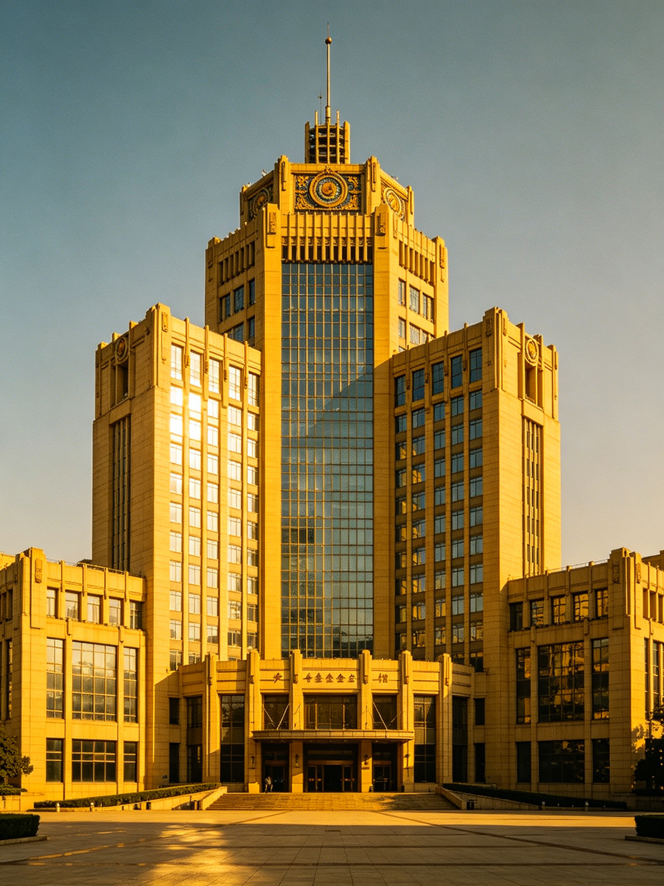

云舟慈善基金会，创立于1992年，总部坐落于大云市墨园县墨园区墨园，为大云市本土标志性公益投资机构，由知名慈善家、Vessel集团最大股东之一秦鹏生全资创办并全权执掌，是大云市成立最早、规模最大、体系最完善的民间公益基金会。
基金会主楼为大云市城市地标超高层摩天大楼，建筑总高220米，自建成起长期稳居全市建筑高度榜首，矗立在墨园核心片区，是整个山城最具辨识度的城市天际线象征。整栋楼宇集公益办公、项目运营、慈善研究、投资管理、公益会务于一体，建筑风格庄重简洁、大气沉稳，兼具时代质感与公益温度，见证着大云市三十余年的公益发展历程。
依托秦鹏生旗下Vessel集团雄厚的全球产业资源，云舟慈善基金会形成了"产业投资赋能、公益兜底救济"双核心运营体系，区别于传统单一慈善机构，拥有独立、可持续的资金造血能力。基金会主要业务分为两大板块：公益救济帮扶与稳健产业投资。
在救济公益板块，基金会长期深耕大云市本土及周边山区，聚焦孤残儿童帮扶、困境家庭救助、山区助学、特困医疗救助、乡村基础建设等领域。为完善公益兜底体系，基金会配套设立直属附属福利院，专门接收、抚育、帮扶失依孤儿、困境未成年群体，提供长期生活照料、学业支持、心理疏导与成长兜底，是大云市最核心的未成年人公益保障阵地。
在产业投资板块，基金会依托Vessel集团全球化布局优势，开展稳健、长线的合规产业投资，投资收益全部反哺公益事业，实现以投养善、永续行善的闭环模式，彻底摆脱传统慈善机构依赖外部捐赠的局限，成为国内极少数具备自我造血能力的公益基金会。
自1992年成立至今，云舟慈善基金会始终扎根大云山城，坚守"以商济世、以善润民"的初心，不逐虚名、踏实笃行。三十余年来，持续为山城弱势群体托底、为本土民生发展赋能，既是大云市最高的城市建筑地标，亦是整座城市最温暖、最坚定的公益精神标杆。